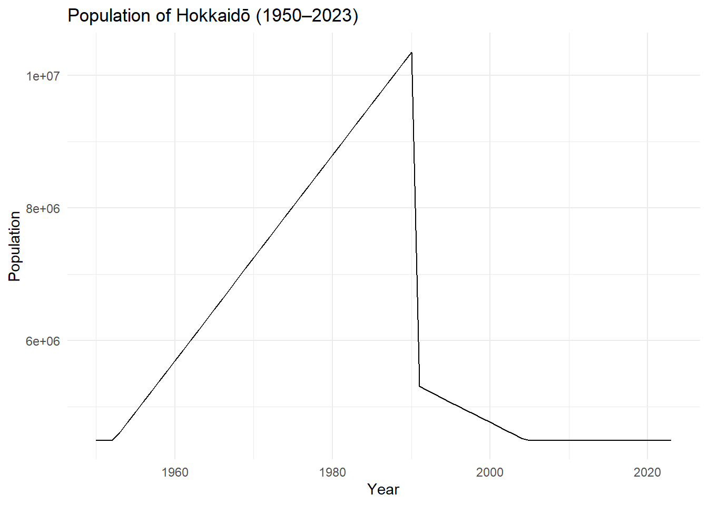
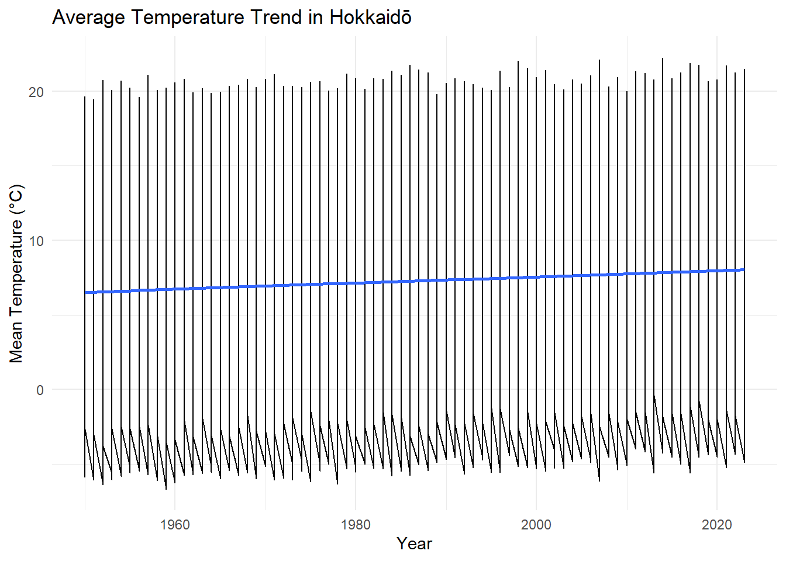
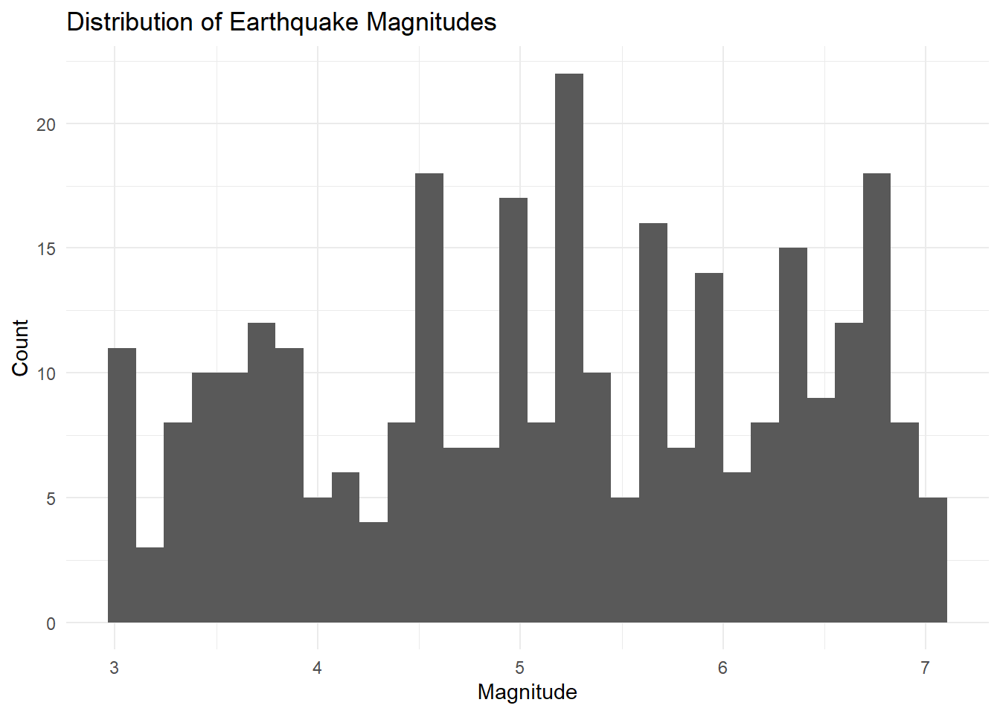
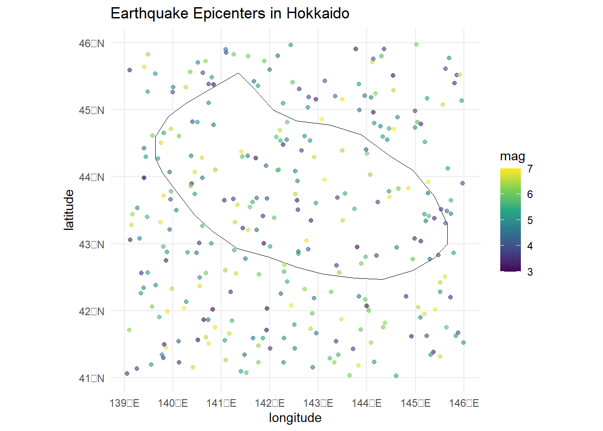

library(dplyr)
library(readr)
library(ggplot2)
library(sf)
library(leaflet)
library(lubridate)
source("../functions/cleaning.R")Hokkaidō Island: Population, Climate, and Natural Disaster Patterns
1 1. Introduction
Hokkaidō is Japan’s northernmost island and the second largest island in the country. It is known for its unique climate, rapidly aging population, and frequent seismic activity. The purpose of this report is to explore three important aspects of Hokkaidō:
- Long-term population changes
- Climate trends, including warming patterns
- Natural disaster risks, especially earthquakes
This project integrates multiple datasets, performs data cleaning, and delivers statistical summaries, maps, and visualizations to demonstrate modern data analysis and communication skills.
2 2. Data Sources and Cleaning
This project uses three major datasets:
- Population data (1950–2023)
- Climate data (1950–2023, monthly)
- Earthquake records (2000–2023)
pop <- read_csv("../data/hokkaido_population.csv")
climate <- read_csv("../data/hokkaido_climate.csv")
eq <- read_csv("../data/earthquakes_japan.csv")
pop <- clean_pop(pop)
climate <- clean_climate(climate)
eq <- clean_eq(eq)2.1 2.1 NA Evaluation
summary(is.na(pop)) year population pct_over65
Mode :logical Mode :logical Mode :logical
FALSE:74 FALSE:74 FALSE:74 summary(is.na(climate)) year month mean_temp max_temp
Mode :logical Mode :logical Mode :logical Mode :logical
FALSE:888 FALSE:888 FALSE:888 FALSE:888
min_temp
Mode :logical
FALSE:888 summary(is.na(eq)) date year latitude longitude
Mode :logical Mode :logical Mode :logical Mode :logical
FALSE:300 FALSE:300 FALSE:300 FALSE:300
mag
Mode :logical
FALSE:300 Population data are complete for all years.
Climate data are complete for all months and years.
Earthquake data are complete for latitude, longitude, and magnitude.
3 3. Population Trends in Hokkaidō
Hokkaidō’s population has been declining for decades due to aging, low birth rates, and out-migration to major cities like Tokyo.
ggplot(pop, aes(year, population)) +
geom_line() +
labs(title = "Population of Hokkaidō (1950–2023)",
x = "Year", y = "Population") +
theme_minimal()
3.1 3.1 Aging Population
ggplot(pop, aes(year, pct_over65)) +
geom_line() +
labs(title = "Percentage of Population Age 65+",
x = "Year", y = "% Age 65+") +
theme_minimal()
4 4. Climate Trends in Hokkaidō
Hokkaidō has experienced noticeable warming over the last 70 years.
ggplot(climate, aes(year, mean_temp)) +
geom_line() +
geom_smooth(se = FALSE) +
labs(title = "Average Temperature Trend in Hokkaidō",
x = "Year", y = "Mean Temperature (°C)") +
theme_minimal()
Seasonal variation is also clear:
ggplot(climate, aes(factor(month), mean_temp)) +
geom_boxplot() +
labs(title = "Monthly Temperature Distribution",
x = "Month", y = "Temperature (°C)") +
theme_minimal()
5 5. Earthquake Activity
Hokkaidō frequently experiences earthquakes due to tectonic activity along Japan’s subduction zones.
5.1 5.1 Earthquake Magnitude Distribution
ggplot(eq, aes(mag)) +
geom_histogram(bins = 30) +
labs(title = "Distribution of Earthquake Magnitudes",
x = "Magnitude", y = "Count") +
theme_minimal()
5.2 5.2 Earthquake Map
library(sf)
hok <- sf::st_read("../data/hokkaido.geojson")Reading layer `hokkaido' from data source
`C:\Users\miket\Downloads\Hokkaido-Project-Fixed\data\hokkaido.geojson'
using driver `GeoJSON'
Simple feature collection with 1 feature and 1 field
Geometry type: POLYGON
Dimension: XY
Bounding box: xmin: 139.6367 ymin: 42.46707 xmax: 145.6641 ymax: 45.55148
Geodetic CRS: WGS 84ggplot() +
geom_sf(data = hok, fill = "white", color = "black") +
geom_point(data = eq, aes(longitude, latitude, color = mag), alpha = 0.6) +
scale_color_viridis_c() +
labs(title = "Earthquake Epicenters in Hokkaido") +
theme_minimal()
6 6. Statistical Model: Climate Warming Trend
We estimate the following model for annual average temperature:
\[ Temp_t = \beta_0 + \beta_1 t + \varepsilon_t \]
where \(Temp_t\) is the annual mean temperature and \(t\) is the year.
climate_annual <- climate |>
group_by(year) |>
summarise(mean_temp = mean(mean_temp, na.rm = TRUE))
lm_model <- lm(mean_temp ~ year, data = climate_annual)
summary(lm_model)
Call:
lm(formula = mean_temp ~ year, data = climate_annual)
Residuals:
Min 1Q Median 3Q Max
-0.40223 -0.09445 0.01996 0.09332 0.44318
Coefficients:
Estimate Std. Error t value Pr(>|t|)
(Intercept) -33.392300 1.639005 -20.37 <2e-16 ***
year 0.020473 0.000825 24.82 <2e-16 ***
---
Signif. codes: 0 '***' 0.001 '**' 0.01 '*' 0.05 '.' 0.1 ' ' 1
Residual standard error: 0.1516 on 72 degrees of freedom
Multiple R-squared: 0.8953, Adjusted R-squared: 0.8939
F-statistic: 615.8 on 1 and 72 DF, p-value: < 2.2e-16A positive slope coefficient indicates a long-term warming trend in Hokkaidō.
7 7. Summary
Key findings:
- Hokkaidō’s population is steadily declining and aging rapidly.
- Long-term warming is clear, especially over the last several decades.
- Earthquake frequency remains high, with many magnitude 5+ events in recent years.
This analysis provides a foundation for future policy, environmental planning, and regional development studies.